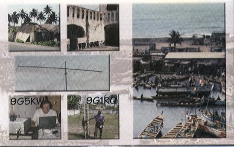

|
Flash ! DX
|
|
Flash ! DX
|
[Back Issues Jan.2002]
TIME:UTC(JST-09:00)
Report from JA1RJU (PM95sq)
31.Jan.2002(15:00d)
V73SIX/B 22:30- 50.014 CW Beacon
VE6AMB 23:35 50.092 CW
VE6ARC/B 23:40- 50.044 CW Beacon
KL7NO 23:41 50.130 SSB
VE7FG/B 23:44- 50.033 CW Beacon loud !
WX7R 23:53 50.089 CW
K7OFT 23:58 50.097 CW
*9M-TV 00:00- 48.24/25/26--
VE7FG/B 00:00 50.033 CW Beacon
N7ET/DU7 00:19 50.110 CW
NL7Z 00:25 50.110 CW/SSB
KL7NO 00:33 50.110/105 SSB
NL7Z 01:43 50.100 CW
KL7NO 01:44 50.105 SSB
3W3ZZ 13:00 50.130 SSB OP & QSL JA1EUI
9M9/CCL 13:00 50.115 SSB OP & QSL JA8CCL
GM4COK/MM 13:15 50.105 CW
XV3AA 13:20 50.130 SSB QSL via JA6UHG
3W3SK 13:25 50.130 SSB QSL via JA6UHG
3W3ZZ 14:45 50.130 SSB
GM4COK/MM 14:55 50.105 CW
|
◎ 東マレーシア・コタ・キナバルのレンタルシャックから9M9/CCLがQRVしている。 マレーシアで"9M9"のプリフィックスが使われるのは、先日の9M9/7M2VPRに続いて2度目になるが、 今回のコールサインは"9M9/"の後に自国で免許されているサフィックスが付くという、変則的なものとなっている。 マレーシア全土(9M2、9M6/9M8)から臨時に運用する外国人局に今後この方式のコールが付与されることになった。 別エンティティーとなる9M2(西マレーシア)と9M6/9M8(東マレーシア)の両方で同じ9M9が使われるとの事なので、 コールサインを聞いただけでは"西"か"東"か見分けが付かなくなる。 |
30.Jan.2002(15:00e)
(K9HMB 23:00 50.105/110 CW JA7.8.0)
NL7Z 23:20 50.120 CW
NL7OW 23:39 50.110 SSB
*ZL-TV 02:00- 45.24/25/26--
*VK-TV 03:00- 46.172/240 --
V73AT 11:08 50.110 CW
V73SIX/B 11:10- 50.014 CW Beacon
VK6RSX 11:30- 50.304 CW Beacon
VK8MS 11:36 50.110 CW CQ
VK4ABW 12:07 50.110 CW
VK4FNQ 12:25 50.110 SSB
N7ET/DU7 13:59 50.110 CW
29.Jan.2002(15:00d)
V73SIX/B 22:00- 50.014 CW Beacon
W7XU/0 23:12 50.095 CW
KL7NO 23:27 50.105 SSB
W1IPL/7 00:01 50.100 CW
W7XU/0 00:06 50.095 CW
KL7NO 00:08 50.102 SSB
KL0BK 00:08 50.110 SSB
NL7Z 00:12 50.095 CW
W1IPL/7 00:13 50.125 SSB
KL7XX 00:16 50.103 CW
K0UB 00:22 50.130 SSB
K0GUV 00:31 50.130 SSB
W7XU/0 00:45 50.098 CW
*ZL-TV 02:30- 45.240 --
*VK-TV 02:30- 46.172 --
XU7ACE 14:08 50.105 SSB OP & QSL ES1FB
28.Jan.2002(15:00e)
V73SIX/B 22:40- 50.014 CW Beacon
*9M-TV 00:00- 48.24/25/26--
9M6SMC 00:30- 50.0145 CW Beacon
NL7Z 01:08 50.110 CW
KL7IKV 01:20 50.102 CW
(UA0SC 01:30 50.110 CW JA7)
NL7Z 01:42 50.110 CW f.out
*??-TV 12:00- 48.250 -- zero beat. SSW strong
VK8?? 12:50 50.110 SSB
27.Jan.2002(15:00e)
N7ET/DU7 23:54 50.110 CW
9M9/7M2VPR 00:50 50.160 SSB
*VK-TV 05:00- 46.172/240 --
*ZL-TV 05:00- 45.250 --
ZL2KT 05:30 50.105 CW
(5B4FL 06:18 50.105 CW JA1)
5B4AGM 06:50 50.105 CW
26.Jan.2002(15:00e)
V73SIX/B 22:30- 50.014 CW Beacon
*BY-TV 01:00- 49.750 --
*9M-TV 01:00- 48.24/25/26--
9M2/JI1ETU 02:00- 50.085 CW Beacon loud !
UA0SC? 02:25 50.110 CW/SSB
*VK-TV 02:40- 46.172 --
EY8CQ 04:04 50.110/112 CW
|
◎ YV5LIXのQSL ベネズエラのYV5LIX・Joseからの連絡によると、JAから届いていたQSLに対する返送が遅れていたが、今回42通を発送したとのこと。 先に行なわれたARRL SSB DX Contestに参加した際のQSLの請求とかち合ったため、作業が遅れてしまったのが理由だったとか。 また、2001年10月7日から23日までの間は"運用していなかった"にも関わらず、10月18日付けのQSLと10月7日22:30UTCのQSOの請求が届いているとのこと。 JAとYV間のロングパスのオープンは11:00 -15:00UTC間だったので、22:30UTCのQSOと10月18日のQSOに付いては誰かがYV5LIXのコールサインを使ってQRVした可能性もあると。 今のところこれらのQSLは7通だが、他の局とのQSOを間違えて送ってきた可能性もあるので確認してほしいと。 最近EA7FTRがQSLマネジャーとなったので、彼からもQSLを得る事が出来るのでまだ請求していない局は、次の住所に送って欲しいと。 EA7FTR FRANCISCO LIANEZ SUERO ASTURIAS #23 ALJARAQUE 21110 HUELVA, SPAIN |

25.Jan.2002(15:00c)
NL7Z 00:23 50.110 CW
9M9/7M2VPR 13:02 50.180 SSB
VK6RSX 13:20- 50.304 CW Beacon
|
◎ コタ・キナバル(東マレーシア)のレンタルシャックから9M9/7M2VPRがQRVしているが、マレーシアで9M9のプリフィックスが使われたは今回が初めて。
このプリフィックスは今年からマレーシアで運用する外国局に割り当てられる事になったもの。
従来9M6(Sabah州)で発給されていたサフックスの最後に"T"を付した方式のコールサインは今後使われない。 免許発給がCMC(Communications and Multimedia Commission)に換わってからマレーシアの免許制度が徐々に変更されてきているが、 "指導書"によると、今後9M6で免許される外国人のコールサインは「9M9/***」(***は自国で免許されているサフィックス)という、 変則的なものとなる。免許の有効期間も最長5年の申請が可能となった。 |
24.Jan.2002(15:00f)
W7XU/0 23:10 50.090 CW EN13
W7KNT 00:36 50.110/120 SSB
(W9.0.5 & VE4.7 into JA7.8.9)
*BY-TV 01:00- 49.750 --
*VK-TV 02:30- 46.240 --
BV6JD 12:05 50.115 SSB
VR2XMT 12:08 50.130 SSB
VR2ZGC 12:25 50.160 SSB
XV3AA 13:15 50.130 SSB
VK6RSX 13:35- 50.304 CW Beacon
VK8RAS 13:40- 50.047 CW Beacon
VR2HAM 14:23 50.105 CW
VR2XMT 14:24 50.115 SSB
VR2XVD 14:33 50.110 SSB
| ◎ 早朝に弱い北米(W7、0)が短時間入感。夕方のヨーロッパ方面は、連日FBに入感していたJA8でも今日は弱い5B4とUY5が確認された程度で、 全国的に"静か"なコンデションだった。夜間にBV、VR2's、XVなど大陸方面が強力に入感。 |
23.Jan.2002(15:00d)
V73SIX/B 22:55- 50.014 CW Beacon
*BY-TV 01:00- 49.750 --
*9M-TV 01:30- 48.240/250 --
*EU & W-Asia 06:20-10:00z. into JA7.8.9.0.2.3.4
(5B4.4X.LZ.UR/UT.YO.OH.I.OM.9A.OK.YU.OE.S5.9H.etc)
|
◎ 06:20z頃から西アジア、ヨーロッパとのQSOがJA7、8、9からクラスターにリポートされ始めたが、
1エリアでは昨日同様、信号のカケラも聞こえない。時間の経過と共にJA2、3、4エリアからもヨーロッパの入感がリポートされ始めても、
相変わらず1エリアではノイズだけで何も聞こえない。 21日にFBなヨーロッパのオープンを味わった1エリア(PM95)だが、今日は完全に"蚊帳の外"。 |
22.Jan.2002(15:00e)
V73SIX/B 22:40- 50.014 CW Beacon
W0BJ 23:30 50.105 CW
K0SQ 23:32 50.102 CW
K9BZ 23:33 50.102 CW
N7ET/DU7 23:33 50.100 CW
NT0V 23:37 50.102 CW
W0BV 23:41 50.102/099 CW
N0QJM 23:46 50.140 SSB
K0GUV 23:46 50.145 SSB
W7KNT 23:49 50.103 CW
NT0V 26:54 50.120 SSB
W7GJ 23:57 50.125 SSB
VE6JY 00:06 50.150 SSB
W7XU/0 00:13 50.098 CW
*BY-TV 01:30- 49.750 --
*ZL-TV 03:00- 45.250 --
*9M-TV 09:00- 48.240/260 --
N7ET/DU7 12:29 50.110 CW
|
◎ "きのうの今日"で期待された夕方のヨーロッパは、信号のカケラも無かった。残念ながら今回も6mの"常識"は生きていた。 6mは許可されていないと言われていたロシア(Russian Rep.)とのQSOがヨーロッパからクラスターにリポートされていた。 RU4CEはウクライナからのQRVとも言われていたが、GLはLO31weとのことなので、紛れも無くQTHはロシア。 先日QRVしたKH2K/AH0でもこの局とQSO出来ているので、最近アクティブにQRVしている模様。 どなたかJAからQSOしていますか？ |


21.Jan.2002(15:00c)
W1IPL/7 22:43 50.100 CW
W7XU/0 23:44 50.096 CW
W7XU/0 00:24 50.096 CW
(OD5/OK1MU 06:21 50.110 CW JA8)
YU1AU 08:01 50.110 CW CQ Eu open!
YU1BW 08:07 50.104 CW
9A8A 08:08 50.101 CW
OM8NY 08:09 50.110 SSB
IK5MEJ 08:12 50.117 SSB
OE3MES 08:14 50.125/130 SSB
I6BQI 08:15 50.140 SSB
OM8NY 08:18 50.100 CW
OM1TL 08:20 50.102 CW
OM2XW 08:25 50.108 CW
IK5YJY 08:28 50.151 SSB
I4EAT 08:29 50.167 SSB
9A1CCY 08:46 50.097 CW
LZ1RB 08:47 50.097 CW
UX0FF 08:48 50.096 CW
9A1CCY 08:58 50.104 CW
9A4HK 09:00 50.117 SSB
IK0CGA 09:09 50.143 SSB
LZ2HM 09:07 50.108 CW/SSB
Z36W 09:09 50.111 SSB
IT9XDJ 09:11 50.105 CW
LZ1AG 09:12 50.100 CW
IK5YJY 09:14 50.140 SSB
I8OHQ 09:15 50.150 SSB
9H1AZ 09:17 50.163 SSB
*9M-TV 09:20- 48.240/260 --
IT9XDJ 09:28 50.105 CW 09:40z f.out
| ◎ 低気圧の通過で季節外れの大雨と強風が吹き荒れた関東地方に予想もしなかったヨーロッパが大オープンした。 08:00z頃に強風を避けて南方向に向けていたアンテナに、"雨ノイズ"の切れ目からYU1AUの"CQ"が飛び込んできた。 次々に飛び込んでくるヨーロッパからの信号は強力で、昨年10月29日の大オープンに匹敵するコンデションだった。 入感しているエリアも広く、東欧から南欧に掛けてほとんど同時に聞こえてきた。 最後は50.105MHzのIT9XDJの"CQ連呼"にJAからの応答もなく、09:40z頃に1エリア(PM95)では一旦フェードアウト。 |
20.Jan.2002(15:00e)
V73SIX/B 22:20- 50.014 CW Beacon
W1IPL/7 23:38 50.100 CW
K0GU 23:43 50.103 CW
W6OAL 23:51 50.133 SSB
K7YVZ 23:54 50.095 CW
KB7WW 00:10 50.095 CW
KD7WH 00:20 50.097 CW
K7YVZ 00:29 50.093 CW
W7JWC 00:41 50.110/120 SSB
K6MYC 00:52 50.095 CW
WA6JRA 00:55 50.100 CW
XE2EED 00:59 50.105 CW/SSB
KL7XX 01:26 50.101 CW
*9M-TV 01:30- 48.240/260 --
*BY-TV 01:30- 49.750 --
KL7HBK 02:16 50.100 CW
VK6RSX 13:00- 50.304 CW Beacon
| ◎ 1/4日以来落ち込んでいた北米が久しぶりにオープン、1エリア(PM95)でも23:35z頃からW7、W0が入感してきた。 時間と共にW6、XE2、KL7が入感してきたが、02:30z頃にはKL7を最後にフェードアウト。 今日のオープンは信号も弱くコンデションは不安定だったが、春のDXシーズンに期待の拡がるオープンだった。 |
19.Jan.2002(15:00c)
V73SIX/B 22:40- 50.014 CW Beacon
*9M-TV 06:30- 48.24/25/26--
18.Jan.2002(15:00c)
*VK-TV 04:30- 46.172/240 --
17.Jan.2002(15:00d)
V73SIX/B 23:20- 50.014 CW Beacon
*ZL-TV 04:30- 45.25/25/26--
*9M-TV 05:30- 48.250/260 --
16.Jan.2002(15:00e)
V73SIX/B 23:00- 50.014 CW Beacon
*9M-TV 06:30- 48.240/260 --
9M2TO/B 09:18- 50.005 CW Beacon
VK6RO 09:53 50.110 CW/SSB
VK6RPH 09:55- 50.066 CW Beacon
VK8RAS 12:00- 50.047 CW Beacon
VK6RPH 12:00- 50.066 CW Beacon
VK8MS 12:38 50.110 CW
N7ET/DU7 12:56 50.110 CW
|
◎ 1/10日-15日、Saipan(N.Marianas)からKH2K/AH0(QK25)を運用。コンデションが落ちたとは言え、この時期に6mで5大陸、17Ctry(エンティティー)とQSO。
特にJY9NX、5B4's、4X'sは、早い時間には04:00z台(14:00LMT=13:00JST)から強力に入感していた。
JAではめったに聞く事が出来ないOD5/OK1MUまで呼んできた。 午前中の北米、南米はかなりスポット的なオープンで入感している時間も短かったが、信号は強力。 11日朝(UTCでは10日)、JAのパイルを浴びていたミッドウェイのNH6FP/KH4は、終始RS59でJAのスキャッターと共に聞こえていた。 翌朝(12日JST)もNH6FP/KH4は、21:55z(06:55JST)頃から50.110MHzのSSBでCQを連発していたが、残念ながらJAとのパスは無く30分ほどでQRTしてしまった。 サイパンではこの後、W8を皮切りにW9/W0など北米大陸の中央部を中心にW7、W4、KL7が入感した。 今回のKH2K/AH0のHF帯は、160mだけの運用だったが、このバンドでもK9HMBやK4RX、4F2KWT、DU9/N0NMなど6mで聞き覚えのある局ともQSO出来た。 HFの他の周波数帯では、同行したKH0/JK7TKE・福井さんが約2,200ほどQSOしている。
◎ ウイルス(Virus)にご注意！！ |
- Kazu, JA1RJU will be active on HF and 6 metres as KH2K/AH0 from Saipan, Northern Marianas (OC-086) on 10-15 January. He will concentrate on 160 metres (announced frequency 1827.5 KHz)for North America and Europe with a full size dipole and 1 KW. QSL via JA1RJU either direct or through the JARL bureau. |
09.Jan.2002(15:00c)
V73SIX/B 22:40- 50.014 CW Beacon
*9M-TV 00:30- 48.240/260 --
XV3AA 09:22 50.130 SSB
08.Jan.2002(15:00c)
N7ET/DU7 23:52 50.110 CW
*9M-TV 01:30- 48.240/260 --
*BY-TV 09:00 49.750 --
07.Jan.2002(15:00d)
9M6SMC 00:34- 50.0145 CW Beacon
*9M-TV 05:00- 48.240/260 --
XV3AA 08:10 50.130 SSB
06.Jan.2002(15:00c)
V73SIX/B 22:40- 50.014 CW Beacon
*9M-TV 03:00- 48.240/260 --
XV3AA 09:50 50.130 SSB
|
◎ 昨日、今日と早朝の北米大陸はもちろん太平洋方面のオープンも無い。夕方になってXV3AAが入感していた程度。
DUから再びEUがオープンしていたので、西日本ではまだEUとのオープンのチャンスが残されているかも。
◎ EX8MLE(Kyrgystan)のQSL Thank You very mach for nice QSO, signal was realy strong here 59 ++ and mach JA station on the band. I very pleased to work about 100 JA station. Please QSL only direct, adress in QRZ is correct, at present time I have no manager, only direct, $ is better and also registered mail, low chances to lost Your card.
GL,& 73 |

05.Jan.2002(15:00c)
V73SIX/B 22:30- 50.014 CW Beacon
*9M-TV 04:00- 48.240/260 --
04.Jan.2002(15:00e)
AH4/AH7G 23:03 50.110 SSB
*ZL-TV 23:30- 45.25/25/26--
*VK-TV 23:30- 46.172/240 --
*9M-TV 23:30- 48.240/260 --
VK4ABW 23:58 50.110/105 CW
VK2DN 00:07 50.111 CW
V73SIX/B 00:15- 50.014 CW Beacon
AH2K/KH0 07:12 50.110 CW QSL via JE8KKX
DU1ZV 08:59 50.110/105 CW CQ EU
BV2NT 09:19 50.110 SSB
| ◎ 元旦から3日連続入感していた北米大陸も今日はお休み。久しぶりに南半球のパスが開いた。 ダイレクトで入感していたMidway IsのAH4/AH7GはQSBも激しく、入感エリアが目まぐるしく変わるスポット的なオープンだった。 夕方は東南アジアから台湾、沖縄などの近場が入感。 |
03.Jan.2002(15:00e)
W0BV 23:00 50.082 CW
(K9HMB 23:00 50.132 CW)
K0SQ 23:04 50.089 CW
W0XV 23:08 50.095 CW
KM0T 23:14 50.140 SSB
VE5UF 23:17 50.090 CW
K6LIG 23:18 50.140 SSB
KB0IKP 23:21 50.154 SSB
K0KP 23:34 50.088 CW
VE4AMU 23:40 50.165 SSB
W7KQU 23:45 50.099 CW
N0UR 23:47 50.101 CW
VE4KQ 23:48 50.170 SSB
N6JV 23:52 50.098 CW
KL7HBK 23:53 50.099 CW
VE5UF 23:54 50.091 CW
XE2EED 23:55 50.074 CW
K7LJ 23:57 50.084 CW
KJ6CA 23:58 50.088 CW
N6JV 00:00 50.098 CW
VE6TA 00:02 50.107/082 CW
K6FV/B 00:02- 50.069 CW Beacon
N0UD/B 00:03- 50.0694 CW Beacon
KB7WW 00:08 50.105 CW
VA6AS 00:09 50.176 SSB
K7LJ 00:15 50.084 CW
PY2XB 00:15 50.083 CW
XE2EED 00:17 50.075 CW
KB6NAN 00:18 50.127 SSB
VE5UF 00:20 50.175 SSB
*9M-TV 01:00 48.240/260 --
*BY-TV 01:00 49.750 --
(DU1ZV 03:55 50.120 SSB JA8)
UN1SIX/B 04:10- 50.0246 CW Beacon
(LY2BAW 08:29 50.112 CW JA1=QM06 Sc260 )
V73AT 09:39 50.110 CW
N7ET/DU7 12:41 50.110 CW
| ◎ 正月"三が日"、連続して北米大陸がオープン。1エリア(PM95sq)ではJA7から30分遅れでW0から入感して来た。 入感エリアはVE4/5/6/7、W6/7/9/0、XE2と昨日に比べかなり広い範囲で同時にオープンした。 JA1、0エリアで聞こえていたW0は、かなりスポットなオープンだったのか、CQを連発している局が多かった。 西日本で呼んでいる夕方のヨーロッパは、1エリアでは全く！聞こえない。 |
毎火曜日にEX8MLT(Oreg)とQRVしているKyrgyzstan
のEX8MLE(Serge)のQSL。カードはEX8MLTと"共用"。
イタリアにQSLマネジャーが居るとの情報が流れて
いるが本人は「マネジャーは居ない」と言っている。
出来るだけ"書留郵便"で直接請求して欲しいとの事。
02.Jan.2002(15:00e)
K7RAT 22:40 50.102 CW
NN7J 22:42 50.102 CW
W7YOZ 22:44 50.102 CW
(VE7DXG 22:47 50.102 CW)
KB7WW 22:50 50.102 CW
(WH2R 23:00 50.110/115 CW/SSB OP.JI1DMH)
N7RY 23:11 50.101 CW
W6YM 23:16 50.130 SSB
KI6CG 23:29 50.160 SSB
KB7WW 23:38 50.098 CW
W7QC 23:38 50.090 CW
N7RA 23:40 50.085 CW
N7RY 23:44 50.101 CW
K7CW 23:49 50.105 CW
K6FV 23:50 50.093 CW
XE2EED 23:54 50.130 SSB
XE1KK 23:58 50.163 SSB
K6MYC 00:01 50.105 SSB
NL7Z 00:06 50.110 CW CQ HL
NL7Z 00:11 50.120 SSB
XE1KK 00:15 50.163 SSB RS59
N7EPD 00:20 50.095 CW
NN7J 00:25 50.110 SSB
XE1ZOI 00:27 50.102 CW
KL7Y 00:30 50.130 SSB
KL7IKV 00:43 50.090 CW CQ OC
NH6JC 01:18 50.103 CW
KH6CH 01:21 50.142 SSB
KH6BBM 01:40 50.130 SSB
*9M-TV 03:00 48.240/260 --
(UK9AA 05:55 50.107 CW JA8)
(UY5QZ 06:45 50.092 CW JA1.7)
(UT7QF 06:49 50.110- CW/SSB JA1.0)
EU's 09:30- 50.110- CW/SSB JA2-7.JR6.JA9.0
(EH7.IK/IW/I.F)
|
◎ 元旦から2日連続、北米大陸がオープン。VE7、W6/7、XEと太平洋岸沿いのオープンだったが、昨日同様、西日本にパスが移っていて、
1エリア(PM95)では信号も弱かった。昨日から、伝搬ルートが変わったためか？、今日は久しぶりにダイレクトのパスでハワイ(KH6)が強力に入感してきた。 昨日は、夕方(06:40z頃)からJY、5B4、UNの西アジアに続いて、YO、YU、LZ、UR-UYの東ヨーロッパがオープンしたが、 今日も06:00z頃のUK9、UT/UYや09:30z頃からのEH、I、Fなどの南ヨーロッパがリポートされている。 ただ、このオープンはJA9、0の日本海側と、西日本で聞こえていた程度で、1エリア(PM95sq)ではほとんど確認出来なかった。 |
01.Jan.2002(15:00e)
(W4RX 23:58 50.100/104 CW JA2-6.9)
WB8VLC/7 00:03 50.100 CW
WA7JTM 00:07 50.104 CW
K7JE 00:08 50.086/110 CW/SSB
WB8VLC/7 00:09 50.090 CW
KB7WW 00:16 50.092 CW
AA7A 00:19 50.092 CW
XE2EED 00:30 50.130 SSB
WB8VLC/7 00:32 50.085 CW
K7GCO 00:36 50.128 SSB
KL7XX 00:55 50.110/103 CW
W7NTF 00:59 50.151 SSB
KL7IKV 01:00 50.095 CW
XE2EED 01:08 50.130 SSB
UN1SIX/B 04:22 50.0246 CW Beacon
(JY9NX 06:18 50.110 SSB JA2-)
EU's 06:40- 50.110 CW/SSB
(LZ1/2.YU.YO7.UR5/6/7-US5.UT8.UX0.UY5)
|
◎ 年明け早々、北米大陸がオープン、1エリア(PM95)では00:00z頃からW7が入感してきた。
信号はお世辞にも"強い"と言うものではなかったが、元旦から6mで北米が入感したのは最近ではあまり記憶に無い。
今日のオープンは年末のオープンと違い、北日本より西日本に良く入感していたようで、JA8ではほとんど聞こえなかったと。
1エリアではW6、7、KL7と共にXE2EEDも聞こえていたが、西日本にオープンしていたW4(Florida)は聞こえなかった。 年末からフィリピンのマニラからDU1ZVでQRVしているJA1BRK・米村さんからのリポートによると、 12月31日の09:06z頃からヨーロッパが大オープン、DL／Ｇ／PA／OZなどと、約1時間で57局とQSO出来たとの事。 年末に九州でヨーロッパが入感したとの情報もあるので、アジアからの西方面のパスはまだ残っている。 |